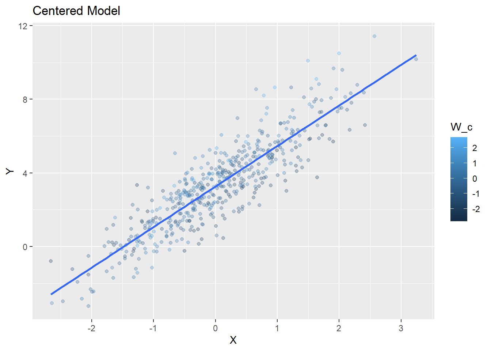

library(tidyverse)
set.seed(123)
n <- 500
data <- tibble(
X = rnorm(n, 0, 1),
W = rnorm(n, 4.2, 1)
)
data <- data %>%
mutate(
Y = 2 + 0.5*X + 0.3*W + 0.4*X*W + rnorm(n, 0, 1)
)Centering and Interaction: What Changes and What Does Not
Overview
This demonstration shows that centering a moderator does not change the interaction effect. It only changes how the main effects are interpreted. This distinction is critical for correctly explaining moderation models in manuscripts and dissertation defenses.
Model Without Centering
model_uncentered <- lm(Y ~ X * W, data = data)
summary(model_uncentered)
Call:
lm(formula = Y ~ X * W, data = data)
Residuals:
Min 1Q Median 3Q Max
-2.7189 -0.6929 0.0148 0.6765 3.2949
Coefficients:
Estimate Std. Error t value Pr(>|t|)
(Intercept) 1.78656 0.19195 9.307 < 0.0000000000000002 ***
X 0.66407 0.19440 3.416 0.000688 ***
W 0.35629 0.04439 8.026 0.00000000000000737 ***
X:W 0.37562 0.04547 8.261 0.00000000000000132 ***
---
Signif. codes: 0 '***' 0.001 '**' 0.01 '*' 0.05 '.' 0.1 ' ' 1
Residual standard error: 0.9924 on 496 degrees of freedom
Multiple R-squared: 0.8333, Adjusted R-squared: 0.8323
F-statistic: 826.7 on 3 and 496 DF, p-value: < 0.00000000000000022Interpretation
In this model, the coefficient for X represents the effect of X on Y when W = 0.
This is often not meaningful. In this example, W has a mean of approximately 4.2, and values near 0 are outside the observed or realistic range. As a result, the main effect of X is anchored to a value of W that does not represent the data.
The interaction term (X:W) captures how the effect of X changes as W changes. This term reflects the relationship of interest in moderation and does not depend on where zero is defined.
Centering the Moderator
data <- data %>%
mutate(W_c = W - mean(W))
mean(data$W_c)[1] -0.0000000000000002077447Interpretation
Centering shifts the scale of W so that its mean becomes zero. This does not change the distribution or relationships among variables. It only redefines the reference point.
After centering, W = 0 corresponds to the average level of W in the sample.
Model With Centering
model_centered <- lm(Y ~ X * W_c, data = data)
summary(model_centered)
Call:
lm(formula = Y ~ X * W_c, data = data)
Residuals:
Min 1Q Median 3Q Max
-2.7189 -0.6929 0.0148 0.6765 3.2949
Coefficients:
Estimate Std. Error t value Pr(>|t|)
(Intercept) 3.28212 0.04447 73.812 < 0.0000000000000002 ***
X 2.24078 0.04577 48.957 < 0.0000000000000002 ***
W_c 0.35629 0.04439 8.026 0.00000000000000737 ***
X:W_c 0.37562 0.04547 8.261 0.00000000000000132 ***
---
Signif. codes: 0 '***' 0.001 '**' 0.01 '*' 0.05 '.' 0.1 ' ' 1
Residual standard error: 0.9924 on 496 degrees of freedom
Multiple R-squared: 0.8333, Adjusted R-squared: 0.8323
F-statistic: 826.7 on 3 and 496 DF, p-value: < 0.00000000000000022Interpretation
In this model, the coefficient for X now represents the effect of X on Y at the average value of W. This is typically the most interpretable and defensible version of the main effect.
The interaction term (X:W_c) represents the same quantity as before: how the slope of X changes as W changes.
Direct Comparison of Coefficients
Estimate Std. Error t value Pr(>|t|)
(Intercept) 1.787 0.192 9.307 0.000
X 0.664 0.194 3.416 0.001
W 0.356 0.044 8.026 0.000
X:W 0.376 0.045 8.261 0.000 Estimate Std. Error t value Pr(>|t|)
(Intercept) 3.282 0.044 73.812 0
X 2.241 0.046 48.957 0
W_c 0.356 0.044 8.026 0
X:W_c 0.376 0.045 8.261 0Interpretation
You should observe that:
- The intercept changes
- The main effect of X changes
- The main effect of W changes
These changes occur because the reference point has shifted.
Key Comparison: Interaction Term
Estimate Std. Error t value Pr(>|t|)
X:W 0.376 0.045 8.261 0 Estimate Std. Error t value Pr(>|t|)
X:W_c 0.376 0.045 8.261 0Interpretation
The interaction term is identical across both models. The coefficient, standard error, and p-value do not change.
This is because the interaction term represents a difference in slopes. Centering shifts the scale of W but does not change how the slope of X varies across values of W.
In the centered model, the coefficient for X represents the effect of X on Y when W is at its average value.
X (b = 2.241): For every one-unit increase in X, Y increases by 2.241 units, on average, when W is at its mean.
W_c (b = 0.356): For every one-unit increase in W (relative to its mean), Y increases by 0.356 units, on average, when X = 0.
Interaction (X:W_c = 0.376): For every one-unit increase in W, the effect (slope) of X on Y increases by 0.376 units.
In other words, the relationship between X and Y becomes stronger as W increases.
Intercept (b = 3.282): When X = 0 and W is at its mean, the expected value of Y is 3.282.
Visualization
library(ggplot2)
ggplot(data, aes(x = X, y = Y, color = W)) +
geom_point(alpha = 0.3) +
geom_smooth(method = "lm", se = FALSE) +
labs(title = "Uncentered Model")`geom_smooth()` using formula = 'y ~ x'Warning: The following aesthetics were dropped during statistical transformation:
colour.
ℹ This can happen when ggplot fails to infer the correct grouping structure in
the data.
ℹ Did you forget to specify a `group` aesthetic or to convert a numerical
variable into a factor?ggplot(data, aes(x = X, y = Y, color = W_c)) +
geom_point(alpha = 0.3) +
geom_smooth(method = "lm", se = FALSE) +
labs(title = "Centered Model", color = "W_c")`geom_smooth()` using formula = 'y ~ x'Warning: The following aesthetics were dropped during statistical transformation:
colour.
ℹ This can happen when ggplot fails to infer the correct grouping structure in
the data.
ℹ Did you forget to specify a `group` aesthetic or to convert a numerical
variable into a factor?
Interpretation
The visual pattern of the relationship between X and Y is unchanged. The relative differences across values of W are identical. Only the labeling of the moderator has shifted.
Why This Matters
Centering is not a statistical correction. It does not fix bias, improve model fit, or change significance.
It changes the interpretation of coefficients by redefining the reference point.
Without centering, main effects are interpreted at W = 0, which may not exist or be meaningful. With centering, main effects are interpreted at the average level of W, which is typically more appropriate for reporting and discussion.
The interaction term, which represents the core moderation effect, is unaffected by centering. This means that conclusions about moderation do not depend on whether centering is applied.
Key Takeaway
Centering changes the interpretation of main effects but does not change the interaction, its uncertainty, or its statistical significance. Any claim that centering alters the presence or strength of moderation is incorrect.